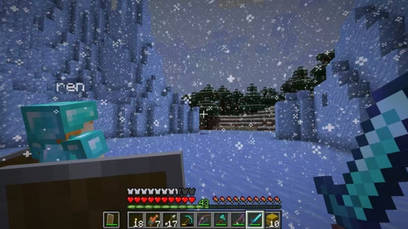

《我的世界》是一款由瑞典游戏设计师马库斯·阿列克谢·泊松（Markus "Notch" Persson）开创的沙盒式建筑游戏，最初于2009年5月17日发布为PC平台的独立游戏，后逐渐在多个平台上发布，包括移动设备、游戏主机和虚拟现实平台。
游戏的核心是探索和创造。玩家可以在一个由方块组成的3D世界里自由移动，使用各种工具挖掘、建造、合成物品，并与游戏中的生物互动。游戏提供了无限的可能性，玩家可以创造自己的世界，实现各种创意和想象。
《我的世界》不仅是一款游戏，更是一种文化和艺术形式。它拥有庞大的玩家社区和丰富的MOD（模组）生态系统，玩家可以下载和分享各种自定义内容，进一步扩展游戏的玩法和体验。
如果你还没有尝试过《我的世界》，不妨现在就加入这个充满创意和乐趣的世界吧！